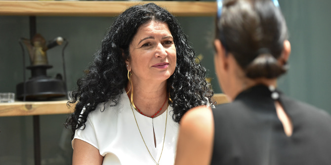
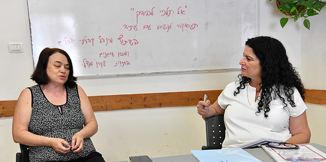

The outbreak of coronavirus in Israel resulted in nearly one million people losing their jobs, 28% more women than men. Many of these women are from underprivileged sectors of society, engaged in temporary or low-skilled jobs, making them the weakest link in the employment chain. The loss of their basic financial security has increased the likelihood of family crises, domestic violence and sexual abuse, as well as suicide attempts. There has already been an 18% increase in referrals to domestic violence crisis centers.
From the start,
Doris Mor, a graduate of the Mandel School for Educational Leadership, quickly understood “both as a social worker and as a lawyer, that the employment crisis is never just a crisis for the individual being fired, but can also become a marital and family crisis. I knew that I would soon be hearing many painful stories of violence and possibly even murder.”

For over 13 years, Doris has been running the Oganim ("Anchors") Institute, which provides occupational consulting and training to individuals to help them enhance their skills and professional standing. Due to the steep rise in unemployment during the recent crisis, Doris realized that it was critical to create a special program for disempowered women, particularly in light of the fact that as a result of economic necessity, over 60% of women return to their abusive husbands.
Doris selected Jerusalem as the location for her new program, “Do Not Walk Alone,” as she knows the city well. She specifically wanted her activities to be situated in the Yovalim Community Association, which operates community centers in neighborhoods in the south-west of the city that service a population of around 25,000 and several enclaves of underprivileged families.
In preparation, Doris mapped out the neighborhoods and considered who might be suitable to join the program’s steering committee. Gradually, she assembled a talented group of people that included directors of the community centers and social workers, as well as local and municipal administrators involved in professional training.
Due to the urgent need that emerged during the crisis, Doris requested a grant from the Mandel Foundation to support the “Do Not Walk Alone” program, which targets unemployed women between the ages of 30-60, with priority given to mothers of young children. The women meet for five 5-hour sessions in small groups, in accordance with current health regulations (in-person or via Zoom). The program provides these disadvantaged women with an immediate response tailored to their needs, enabling them to return to suitable, stable employment as soon as possible. By helping them to identify their strengths, improve their technological skills and expand their connections, the program enables these women to reinvent themselves professionally.
Doris aims to motivate them and is inspired in return: “I meet amazing women who know how to cook, bake, sew and knit. All these things have potential value in the marketplace.” She shows these women that they have options: “They can even consider combining work as employees with life as small, independent freelancers.”
After steering committee meetings and a digital campaign advertising the program, the recruitment process is now underway for the next round of the program, after the completion of a first round during the Passover vacation. The idea is to recruit around 30 unemployed women, though Doris and the committee are aware that some will not complete the program.

The women who persist and complete the program will no longer be the same as they were before. They will discover their strengths, develop new skills, and gain a sense of hope for the future, as well as a new understanding that work is not just a means of survival, but also a key element in their identity. Work can provide them with vital independence and human dignity through their newfound economic and personal freedom.
As Doris Mor reveals, she went through her own occupational transformation: “Until I was 40, I had a wonderful career, working as a social worker. I set up the Maftechot (“Keys”) Hostel, the first of its kind in Israel to offer treatment to violent men. I also managed youth and welfare departments. Everything was going smoothly, until I suddenly had a mid-life crisis that triggered a self-discovery process, helping me to reach my true professional mission.” Six months later, Doris set up the Oganim Institute and began to assist women and men to break through their employment crises by reinventing themselves professionally and returning to the workforce.
Doris believes that we have entered a new era of work that poses extraordinary challenges. Many of us live longer and have many more years of retirement ahead of us. The coronavirus crisis has intensified everything. The world outside was closed, businesses collapsed and people were left anxious, depressed and in a state of uncertainty about the future. Her motto is that we must not abandon one another and that we do not need to walk alone.
Photos: Shlomi Amsalem
{kind=link}
{kind=link}